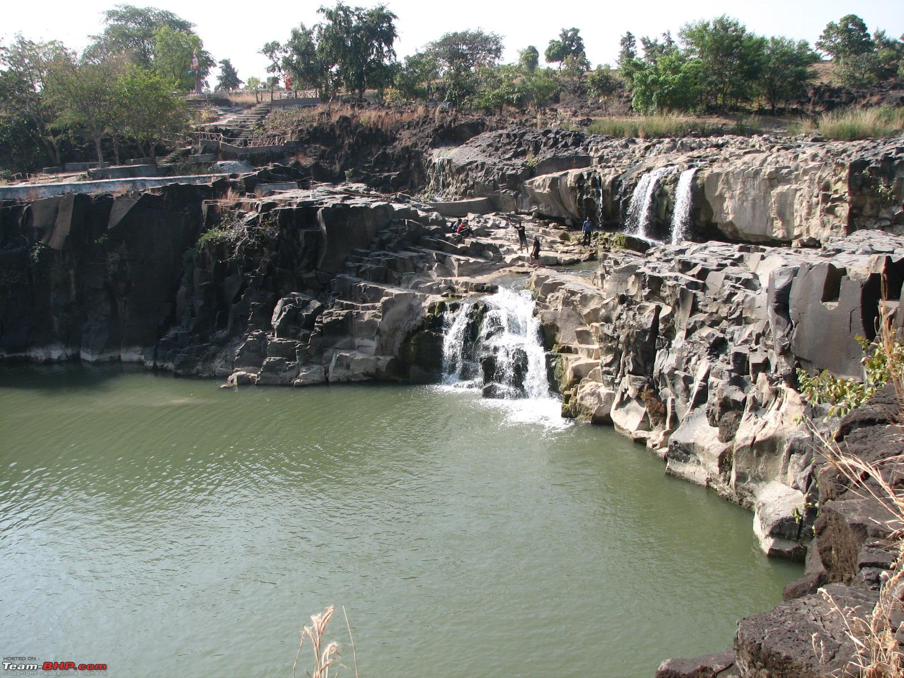
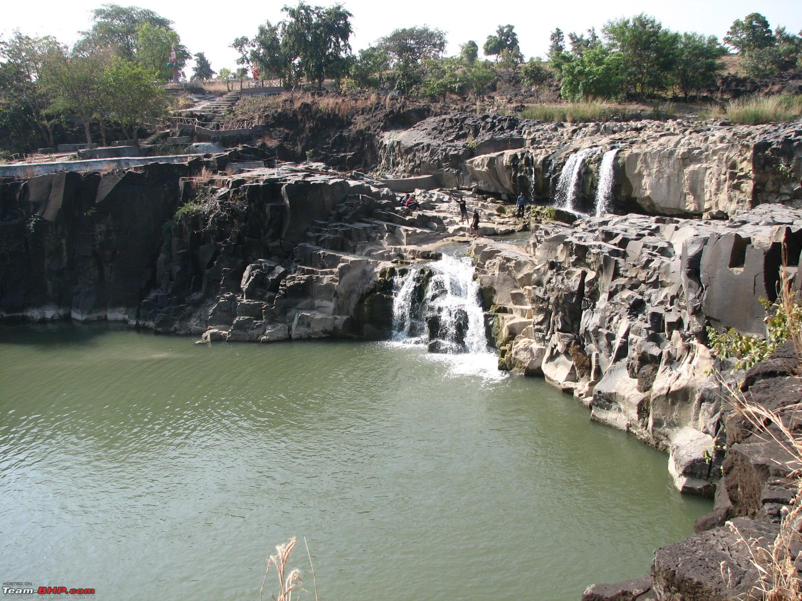

Kuntala Waterfalls
 

Kuntala Waterfalls
Regarded as one of the most scenic waterfalls in Telangana, the Kuntala Waterfalls is situated in amid of gorgeous Sahyadri Mountain Range. At Kuntala,the Kadem river cascades 45 meters down and rushes deep into the Jungles. The road till the entry point of Kuntala Falls is passable and about 400 steps have to be trekked down to reach the bottom of the waterfall. It is known to be the highest waterfalls in the State that plunges from a height of 150 feet. The waterfalls offer spectacular sight particularly when the river is flush with copious inflows, thus making it the most popular weekend getaway from Hyderabad. Kuntala Waterfalls appear as a pleasant surprise, accessible through the twirling roads passing from dense forests that attracts visitors from far and wide. A temple dedicated to Someshwara Swami is located in the vicinity, where people come to pay their homage to the Lord.